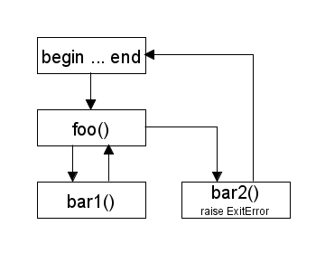

前回は簡単な例題として基本的なデータ構造である二分木を作成しました。Ruby のオブジェクト指向機能を使うと、少し複雑なデータ構造でも簡単に作成することができます。今回はオブジェクト指向から少し離れて、例外処理と大域脱出について説明します。
一般に、例外 (exception) はエラー処理で使われる機能です。「例外＝エラー処理」と考えてもらってもかまいません。最近は例外処理を備えているプログラミング言語が多くなりました。もちろん Ruby にも例外処理があります。
たとえば、1 から 100 までの 2 乗と 3 乗の値をファイルに書き込む処理を考えてみましょう。Ruby でプログラムするとリスト 1 のようになります。
リスト 1 : データの出力
open("test.dat", "w") {|file|
for x in 1..100
printf(file, "%d, %d, %d\n", x, x * x, x * x * x)
end
}
open() にブロックを与えた場合、指定されたファイルをオープンし、生成した IO オブジェクトを引数としてブロックを実行します。ブロックの終了時やエラーによりブロックを脱出するとき、ファイルは自動的にクローズされます。
例外処理のないプログラミング言語、たとえばＣ言語であれば、関数 (メソッド) の返り値でエラーの有無をチェックしなければいけませんが、Ruby ではその必要はありません。エラーが発生しときに送出される通知を捕まえて、それに対応する処理を記述すればいいのです。対応する処理がない場合、Ruby はエラーメッセージを表示して実行を中断します。このように、Ruby は例外処理のおかげでプログラムをすっきりと書くことができます。
なお、エラーが発生したことを「例外が発生した」とか「例外が送出された」という場合もあります。本稿でもエラーのことを例外と記述することにします。
ところで、例外が発生するたびに実行を中断するのではなく、致命的な例外でなければプログラムの実行を継続する、または特別な処理を行わせたい場合もあるでしょう。このような場合にこそ、例外処理が役に立つのです。Ruby では、発生した例外を捕まえるのに begin 文を使います。begin 文の構文を図 1 に示します。
begin 処理A rescue [ExceptionType, ...] 処理B else 処理C end 図 1 : 例外処理
begin 文は、そのあとに定義されている処理 A を実行します。処理 A が正常に終了した場合、else 節が定義されていればそれを実行して end 以降の処理を継続します。もしも、処理 A で例外が発生した場合、処理 A の実行は中断され、その例外が rescue 節で指定した例外と一致すれば、その rescue 節を実行します。
rescue 節には配列で複数の例外を指定することができます。また、begin 文には複数の rescue 節を指定することができます。Ruby の場合、例外は Exception というクラスとして定義されています。例外クラスは階層構造になっていて、すべての例外クラスは直接または間接的に Exception を継承しています。したがって、rescue 節に Exception を指定すれば、あらゆる例外を捕捉することができます。
なお、rescue 節でクラスを指定しないと、StandardError を指定したことになります。一般的な例外クラスは StandardError のサブクラスとして定義されているので、これで一般的な例外を捕捉することができます。
たとえば、0 で割ったときには例外 ZeroDivisionError が送出されますが、これはスーパークラス StandardError で捕まえることができます。逆に、rescue 節に ZeroDivisionError を指定すれば、それ以外のエラーは捕捉されません。
begin 文の使い方は簡単です。リスト 2 を見てください。
リスト 2 : 例外処理の使用例
def foo(a, b)
begin
a / b
rescue ZeroDivisionError
printf("Error %s / %s\n", a, b)
0
end
end
関数 foo(a, b) は a / b を返します。Ruby の場合、0 で除算すると例外 ZeroDivisionError を送出して実行を中断します。ここで、begin 文の rescue 節に ZeroDivisionError を指定すると、例外を捕捉して処理を続行することができます。
実行例を示します。
irb> foo 10, 2 => 5 irb> foo 10, 0 Error 10 / 0 => 0 irb> foo 10, "1" => エラー
foo 10, 2 は 5 を返しますが、foo 10, 0 は 0 で除算しているので例外 ZeroDivisionError が送出されます。この例外クラスは rescue 節に指定されているので、その節が実行されてError 10 / 0 を表示して 0 を返します。
foo 10, "1" は例外 TypeError が送出されますが、この例外クラスは rescue 節に指定されていないので、begin 文の外に波及します。関数 foo() のほかに例外を捕捉する処理はないので、処理を中断してエラーメッセージを表示します。
例外は関数 raise() で送出することができます。
1 は直前に送出された例外を再送出します。たとえば、rescue 節で例外を補足したあと、同じ例外を再度送出したい場合に使います。2 は引数が文字列 message または例外クラス exception の場合です。引数が文字列の場合は、その文字列をメッセージとする RumtimeError を送出します。引数が例外クラスの場合、その例外を送出します。3 は第 2 引数の文字列 message をメッセージとする例外 exception を送出します。また、raise には引数を 3 つ受け取る形式のものもあります。詳細は Ruby のマニュアルをお読みください。
簡単な例を示しましょう。
irb> raise "oops!" RuntimeError: oops!
例外に渡した引数は、例外クラスのインスタンスに格納されます。例外クラスのインスタンスは begin 文の recuse 節で受け取ることができます。次の例を見てください。
irb> begin irb> raise "oops!" irb> rescue => err irb> p err irb> end #<RuntimeError: oops!> => #<RuntimeError: oops!>
resuce の後ろにインスタンスを格納する変数を => で指定します。上記の例では、送出された例外のインスタンスは変数 err にセットされます。例外に渡したメッセージはインスタンスに格納され、メソッド message(), to_s(), to_str() で取得することができます。また、メソッド backtrace() を呼び出すと、バックトレース情報を取得することができます。
例外はクラス Exception を継承することで、ユーザが独自に定義することができます。一般的な例外であれば、StandardError を継承するといいでしょう。次の例を見てください。
irb> class FooError < StandardError irb> end => nil irb> raise FooError, "oops!" FooError: oops!
FooError は StandardError を継承しているので、インスタンス変数やメソッドを定義しなくても動作します。Exception を継承すると、irb が FooError を捕捉できずに終了してしまうので注意してください。
Ruby の例外は、begin 文の中で呼び出した関数の中で例外が送出されても、それを捕捉することができます。この機能を使って、評価中の関数からほかの関数へ制御を移す「大域脱出 (global exit)」を実現することができます。
簡単な例を示しましょう。
リスト 3 : 大域脱出 class ExitError < StandardError end def bar1 puts "call bar1" end def bar2 raise ExitError, "Global Exit" end def bar3 puts "call bar3" end def foo bar1() bar2() bar3() end
begin 文で関数 foo() を実行すると、次のようになります。
irb> begin irb> foo irb> rescue ExitError => err irb> puts err irb> end call bar1 Global Exit => nil
実行の様子を図 2 に示します。

図 2 : 大域脱出
通常の関数呼び出しは、呼び出し元の関数に制御が戻ります。ところが bar2() で raise が実行されると、呼び出し元の関数 foo() を飛び越えて、制御が begin 文の rescue 節に移るのです。このように、例外処理を使って関数を飛び越えて制御を移すことができます。
このように大域脱出は例外処理を使って実現することができますが、Ruby には大域脱出を行う専用の関数 catch() と throw() が用意されています。catch() と throw() の使い方を図 3 に示します。
catch(tag-form) {|tag|
処理
...
}
throw tag, result
図 3 : catch と throw の使い方
catch() と throw() は組み込み関数で、その名が示すように catch() が受け手で throw() が投げ手としての役割を持っています。catch() は引数 tag-form を評価し、その結果をブロックの引数 tag に渡します。この tag が大域脱出先の名札 (タグ) になります。
throw() は引数 tag と同じタグを持つ catch() を探し、見つけた catch() へジャンプします。タグの比較には equal? が使われます。そして、throw() の引数 result が catch() の評価結果となります。result を省略すると nil が返されます。なお、タグのスコープはレキシカルスコープではありません。関数呼び出しの履歴をたどって catch() のタグを探します [*1]。
catch() と throw() を使ってプログラムを書き直すと次のようになります。
irb> def bar2
irb> throw :global_exit, "global exit"
irb> end
=> :bar2
irb> catch(:global_exit) {
irb> foo
irb> }
call bar1
=> "global exit"
catch() のタグにはシンボルを使うと簡単です。例では :global_exit を指定します。そして、throw() で :global_exit へ向けて大域脱出します。catch() の返り値は throw の値 "global exit" になります。
大域脱出はとても強力な機能ですが、多用すると処理の流れがわからなくなる、いわゆる「スパゲッティプログラム」になってしまいます。使用には十分ご注意下さい。
ところで、プログラムの途中で例外が送出されると、残りのプログラムは実行されません。このため、必要な処理が行われない場合があります。たとえば、ファイルの入出力処理の場合、最初にファイルをオープンし最後でファイルをクローズしなければいけません。例外で処理が中断されるとファイルをクローズ [*2] することができない場合があります。
このような場合は、begin 文に ensure 節を定義します。ensure 節は begin 文の処理で例外が発生したかどうかにかかわらず、begin 文の処理が終了するときに必ず実行されます。例外が発生した場合は、eusure 節を実行したあとで同じ例外を再送出します。ensure 節は例外だけではなく、catch() と throw() による大域脱出、return や break などで begin 文を終了する場合でも必ず実行されます。
なお、rescue 節と ensure 節を同時に begin 文に書く場合は、resuce 節を先に定義してください。そのあとで ensure 節を定義します。
簡単な例を示しましょう。大域脱出で作成した foo() を呼び出す関数 baz() を作ります。なお、関数 bar2() は例外で大域脱出を行うものです。
リスト 4 : ensure 節
def baz
begin
foo
ensure
print "clean up\n"
end
end
実行すると次のようになります。
irb> begin irb> baz irb> rescue ExitError => err irb> puts err irb> end call bar1 clean up Global Exit => nil
関数 bar2() で送出された ExitError は baz() の ensure 節で捕捉されて print 'clean up' が実行されます。その後、ExitError が再送出されて、対話モードで入力した except 節に捕捉されて Global Exit と表示されます。
それでは簡単な例題として、逆ポーランド記法で書かれた数式を計算するプログラムを作りましょう。私達が普通に式を書く場合、1 + 2 のように演算子を真ん中に置きます。この書き方を「中置記法 (infix notation)」といいます。中があれば前と後もあるだろうと思われた方はいませんか。実はそのとおりで、「前置記法 (prefix notation)」と「後置記法 (postfix notation)」という書き方があります。
前置記法は演算子を前に置く書き方で、ポーランド記法 (Polish Notation) と呼ばれることもあります。たとえば、1 + 2 であれば + 1 2 と書きます。前置記法を採用したプログラミング言語といえば Lisp が有名です。数式にカッコをつけてみると (+ 1 2) となり、Lisp のプログラムになります。
後置記法は演算子を後ろに置く書き方で、逆ポーランド記法 (RPN : Reverse Polish Notation) と呼ばれることもあります。1 + 2 であれば 1 2 + のように書きます。逆ポーランド記法の利点は、計算する順番に演算子が現れるため、カッコが不要になることです。たとえば、1 と 2 の和と 3 と 4 の和との積という数式を表してみましょう。
中置記法： (1 + 2) * (3 + 4) 後置記法： 1 2 + 3 4 + *
逆ポーランド記法は、日本語の読み方とまったく同じです。1 2 + で 1 と 2 の和を求め、3 4 + で 3 と 4 を求め、最後に 2 つの結果を掛け算して答えが求まります。
私達は中置記法に慣れているため、逆ポーランド記法はわかりにくいのですが、コンピュータで利用する場合、演算ルーチンが簡単になるという利点があります。実際、Forth というプログラミング言語は数式を逆ポーランド記法で表します。
逆ポーランド記法の数式はスタックを使うと簡単に計算することができます。アルゴリズムは次のようになります。
たったこれだけの規則で数式を計算することができます。それでは、実際に 1 2 + 3 4 + * を試してみましょう。表 1 を見てください。
| 数式 | 操作 | スタック |
|---|---|---|
| 1 | PUSH | [ 1 ] |
| 2 | PUSH | [ 2, 1 ] |
| + | POP (2) | [ 1 ] |
| POP (1) | [ ] | |
| 1+2=3 | [ ] | |
| PUSH | [ 3 ] | |
| 3 | PUSH | [ 3, 3 ] |
| 4 | PUSH | [ 4, 3, 3 ] |
| + | POP (4) | [ 3, 3 ] |
| POP (3) | [ 3 ] | |
| 3+4=7 | [ 3 ] | |
| PUSH | [ 7, 3 ] | |
| * | POP (7) | [ 3 ] |
| POP (3) | [ ] | |
| 3*7=21 | [ ] | |
| PUSH | [ 21 ] |
スタックは [ ] で表しています。最初の 1 と 2 は数値なのでスタックにプッシュします。次は演算子 + なので、スタックからデータを取り出して 1 + 2 を計算します。そして、計算結果 3 をスタックにプッシュします。次に、3 と 4 は数値なのでスタックにプッシュします。その次は演算子 + なので同じように処理して、計算結果 7 をスタックにプッシュします。
スタックの中身は [ 7, 3 ] となり、最初の計算結果 3 と次に計算した結果 7 がスタックに格納されています。この状態で最後の * を処理します。7 と 3 を取り出すとスタックは空の状態になります。そして、3 * 7 を計算して 21 をスタックにプッシュします。これで計算は終了です。スタックに残っている値 21 が計算結果となります。
このように、スタックを使うことで逆ポーランド記法で書かれた数式を簡単に計算することができます。実は数式だけではなく、スタックを用いてプログラムを実行することもできます。プログラミング言語 Forth は「数値」と「ワード」という 2 種類のデータしかありません。ワードには +, -, *, / などの演算子のほかに、いろいろな処理が定義されています。もちろん、ユーザが新しいワードを定義することもできます。
Forth の動作は、数値であればスタックにプッシュして、ワードであればそれを実行する、というシンプルなものです。これでプログラミングができるのですから、とてもユニークな言語ですね。
それでは、逆ポーランド記法の数式を計算するプログラムを作ってみましょう。最初に、スタックと演算子を定義します。リスト 5 を見てください。
リスト 5 : スタックと演算子の定義
# スタック
$stack = []
# 演算子
$operator = {
"+" => Proc.new {
n2 = $stack.pop
n1 = $stack.pop
$stack.push(n1 + n2)
},
"-" => Proc.new {
n2 = $stack.pop
n1 = $stack.pop
$stack.push(n1 - n2)
},
"*" => Proc.new {
n2 = $stack.pop
n1 = $stack.pop
$stack.push(n1 * n2)
},
"/" => Proc.new {
n2 = $stack.pop
n1 = $stack.pop
$stack.push(n1 / n2)
}
}
スタックは配列を使って簡単に実現できます。とくに、Ruby には配列をスタックとして操作するメソッド push() と pop() があるのでとても簡単です。グローバル変数 $stack にスタック用の配列をセットします。演算子 +, -, *, / の処理は手続きオブジェクトで行います。各演算子に対応する手続きオブジェクトはハッシュ表 $operator に登録しておきます。
演算を行う手続きオブジェクトは、スタックから数値を 2 つ取り出して演算し、その結果をプッシュするだけです。スタックは後入れ先出しのデータ構造なので、計算するときは数値の順番に注意してください。
次は、逆ポーランド記法を計算する関数 calc_rpn() を作ります。
リスト 6 : 数式の計算
def calc_rpn(buff)
for item in buff.split()
op = $operator[item]
if op
raise "stack underflow #{item}" if $stack.size < 2
op.call
else
$stack.push(item.to_i)
end
end
raise "expression error" if $stack.size != 1
$stack.pop
end
calc_rpn() は引数 buff に文字列を受け取ります。数字と演算子は空白で区切ることにします。メソッド split() で与えられた文字列を空白で分解し、for 文で要素を順番に取り出します。要素 item がハッシュ表 $operator に登録されていない場合、それを数値とみなして $stack にプッシュします。今回のプログラムは整数のみを扱うことにするので、メソッド to_i() で item を整数値に変換します。。
item が $operator に登録されていれば、それは演算子です。op には手続きオブジェクトがセットされているので、それをメソッド call() で呼び出すだけです。このとき、$stack にデータが 2 つ以上あることを確かめます。データがなければ、raise でエラーを送出します。計算が終了したら、スタックに残っている値を返します。計算が正常に終了した場合、スタックにはデータが一つしか残っていないはずです。そうでなければ raise でエラーを送出します。
最後に、数式を入力するための簡単なプログラムを作ります。
リスト 7 : 数式の入力
def main
print "RPN CALC\n> "
while buff = gets
begin
puts calc_rpn(buff)
rescue => err
print err, "\n"
$stack = []
end
print "> "
STDOUT.flush
end
end
標準入力から gets() で数式を読み込み、それを calc_rpn() で計算します。もしも例外が送出された場合、begin 文の rescue 節で捕捉されて変数 err に例外のインスタンスがセットされます。あとは print() でエラーメッセージを表示して、スタック $stack を空にします。これで例外が送出されても処理を続けることができます。プログラムの終了は、Windows であれば Ctrl-Z を、UNIX 系の OS であれば Ctrl-D を入力してください。
それでは実行してみましょう。
$ ruby rpn.rb RPN CALC > 1 2 + 5 3 - * 6 > 1 2 + * stack underflow: * > 1 2 3 + expression error >
正常に動作していますね。このように、逆ポーランド記法の数式はスタックを使って簡単に計算することができます。そして、begin 文で例外を捕捉することにより、例外が送出されても処理を継続することができます。
14 回にわたって簡単なプログラムを作りながら Ruby の基本的なプログラミングについて説明しました。Ruby は奥の深いプログラミング言語なので、本連載ですべての機能を説明するのは不可能ですが、Ruby の基礎からオブジェクト指向までの基本的な機能は一通り説明することができたのではないかと思っています。
ひと昔前、スクリプト言語といえば Perl でしたが、今では JavaScript, PHP, Python, Ruby などいろいろな言語が開発されています。その中でもシンプルでわかりやすい Ruby は、多くの方にとって有用な開発ツールになると思います。今後 Ruby は日本だけではなく、海外でもいっそう普及していくことでしょう。最後に、本稿が Ruby に関心を持たれている読者の参考になれば幸いです。
#
# list14.rb : お気楽 Ruby プログラミング入門
# 第 14 回 プログラムリスト
#
# Copyright (C) 2008 Makoto Hiroi
#
# リスト 5 : スタックと演算子の定義
# スタック
$stack = []
# 演算子
$operator = {
"+" => Proc.new {
n2 = $stack.pop
n1 = $stack.pop
$stack.push(n1 + n2)
},
"-" => Proc.new {
n2 = $stack.pop
n1 = $stack.pop
$stack.push(n1 - n2)
},
"*" => Proc.new {
n2 = $stack.pop
n1 = $stack.pop
$stack.push(n1 * n2)
},
"/" => Proc.new {
n2 = $stack.pop
n1 = $stack.pop
$stack.push(n1 / n2)
}
}
# リスト 6 : 数式の計算
def calc_rpn(buff)
for item in buff.split()
op = $operator[item]
if op
raise "stack underflow #{item}" if $stack.size < 2
op.call
else
$stack.push(item.to_i)
end
end
raise "expression error" if $stack.size != 1
$stack.pop
end
# リスト 7 : 数式の入力
def main
print "RPN CALC\n> "
while buff = gets
begin
puts calc_rpn(buff)
rescue => err
print err, "\n"
$stack = []
end
print "> "
STDOUT.flush
end
end
# 実行
main